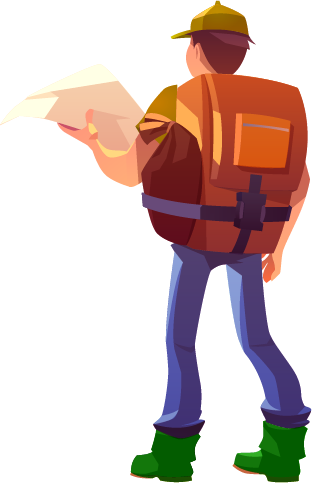
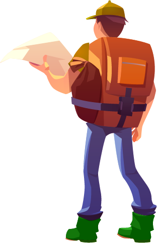
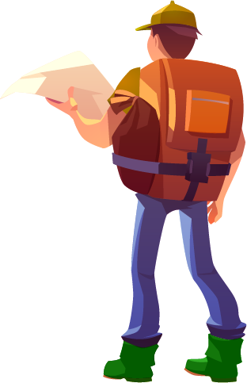
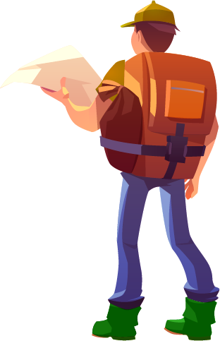

This is the story of Ahaan, born in a small fishing village called Kollidam, in South India.
His whole life was about one thing: his farm. It was here that he grew wheat and raised chickens. But one day, Ahaan met Mishka, the daughter of a rich fisherman in the village. Soon they fell madly in love with each other, Ahaan discovered a feeling he had never felt before, he was happy and thought about her all the time.
Unfortunately, Mishka's wasn't agree. His daughter could not marry a "Sudra*", as he called him. (* Caste system in India.) In spite of his many warnings and to ensure that they would not see each other again, Mishka's father took the drastic decision to lock up his daughter when he went to sea.
Mishka could hardly see the sunlight anymore, she was depressed. One day, when the old fisherman came home, he found his daughter lying on the ground, shivering and full of sweat. He called the best doctors in Kollidam, the druids, the witches, but no one could save poor Mishka. Then one of the witches gave him hope: "A plant can save her: the Frosted Edelweiss! But it only grows on the top of the highest snowy mountains."
The news spread throughout the village, but since he did not live in a mountainous region, his daughter was already doomed. When Ahaan heard the news, he took his courage in both hands and confronted the old fisherman: "I will climb Everest to find the frosted edelweiss, I will save your daughter and you will give me her hand. The father, seeing his last hope, nodded to Ahaan, who immediately left for Nepal.